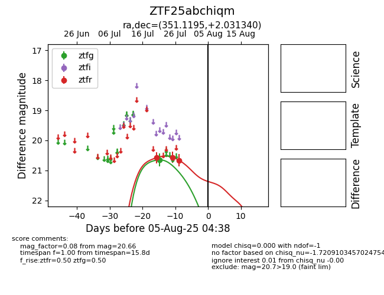

Target ZTF25abchiqm at 2025-08-05 04:38, see:
FINK: fink-portal.org/ZTF25abchiqm
Lasair: lasair-ztf.lsst.ac.uk/objects/ZTF25abchiqm
ALeRCE: alerce.online/object/ZTF25abchiqm
alt names
ZTF25abchiqm (ztf,fink)
coordinates:
equatorial (ra, dec) = (351.1195,+2.03134)
galactic (l, b) = (83.7917,-54.09638)
photometry
last ztfg=20.65, ztfr=20.66
1 ztfg, 3 ztfr detections
